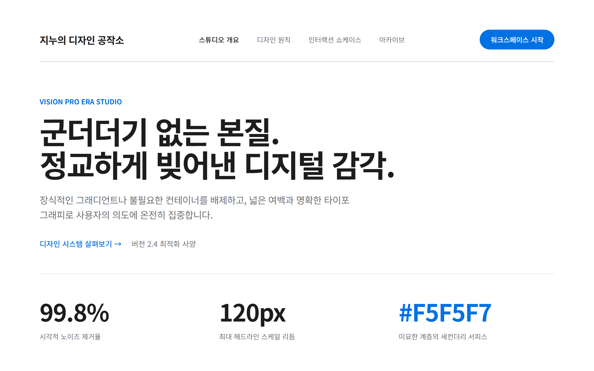

STYLE #01
01. Apple-inspired Premium Minimal
애플 감성 프리미엄 미니멀
장식을 덜어내고 여백과 타이포그래피로 프로덕트의 본질을 극대화한 정제된 UI
Clarity & Focus
극도의 여백 비율
SF/Pretendard 헤드라인
카드 없는 서피스
주요 컬러 팔레트 (클릭 시 HEX 복사)
#FFFFFF
#F5F5F7
#1D1D1F
#6E6E73
#0071E3
프롬프트 전문 (NaN KB)
# 01. Apple-inspired Premium Minimal - Category: minimal, premium, editorial - Intensity: refined --- 01. Apple-inspired Premium Minimal 비주얼 스타일 Apple의 Product Design Philosophy와 Editorial Composition에서 영감을 받은 Premium Minimal UI. Apple 웹사이트나 고유 UI를 복제하지 않는다. 현재 프로젝트의 기능, 콘텐츠, 데이터 구조, 사용자 흐름은 그대로 유지하고 Visual Design과 Layout만 변경한다. 디자인 핵심 Clarity Simplicity Focus Precision Restraint Less UI. More Space. Stronger Typography. 일반적인 SaaS Dashboard가 아니라 정교하게 설계된 Consumer Technology Product처럼 보여야 한다. 색상 구성 Background: #FFFFFF Secondary Background: #F5F5F7 Primary Text: #1D1D1F Secondary Text: #6E6E73 Divider: #D2D2D7 Accent: 1색만 선택 Accent는 Primary CTA, Selected State, Important Interaction에만 사용한다. Gradient는 기본적으로 사용하지 않는다. 타이포그래피 Hero: 56–96px Exceptional Showcase Hero: up to 120px Page Title: 40–56px Section: 28–40px Body: 16–18px Metadata: 12–14px Weight: Regular / Medium / Semibold Typography가 가장 강한 디자인 요소가 되어야 한다. 큰 제목, 짧은 설명, 명확한 CTA 구조를 우선한다. 레이아웃 그리드 넓은 Content Width Desktop Margin: 64–120px Major Section Gap: 96–160px Generous Negative Space Editorial Composition 필요할 경우 Controlled Asymmetry 모든 섹션을 동일한 크기로 반복하지 않는다. Large / Small Dense / Empty Text / Visual 대비를 이용해 Rhythm을 만든다. Surface & Components Card: 필요한 경우에만 Border: 최소 Radius: 8–18px 범위에서 절제 Shadow: 거의 없음 Button: 단순하고 명확 Secondary Action: Text 또는 Quiet Button Icon: 최소화 Navigation: 얇고 조용하게 정보 그룹화는 다음 순서로 해결한다. Whitespace → Alignment → Typography → Divider → Background → Card 이미지 / 일러스트레이션 작은 장식 이미지 여러 개보다 하나의 강력한 Visual을 우선한다. 이미지를 Card에 억지로 넣지 않는다. Large Image, Product Visual, Interface Preview 등 콘텐츠 자체가 되는 이미지 사용. 데이터 비주얼라이제이션 Chart decoration 최소화 숫자는 크고 명확하게 Label은 조용하게 Grid line 최소화 중요한 데이터 하나를 Primary Focus로 설정 Interaction & Motion subtle fade gentle scale smooth transition content reveal Motion은 상태와 계층을 설명할 때만 사용한다. Responsive Desktop을 Mobile로 단순 축소하지 않는다. Mobile: Single Column Strong Typography Reduced Secondary Information Clear Primary CTA Accessibility 충분한 Contrast 명확한 Focus State 읽기 쉬운 Body Size Keyboard Navigation 충분한 Touch Target 피해야 할 디자인 Rounded Card Grid Card inside Card Bento 남용 Purple / Blue Gradient Glassmorphism Glow Giant Rounded Container Decorative Blob Floating Panel Colored Icon Box Excessive Pill Generic Tailwind / shadcn SaaS Hero + 3 Cards + 3 Cards 반복 적용할 화면 유형 Landing, Home, Product Detail, Dashboard, Settings, Form 모두 동일한 Minimal Design Language를 유지한다. 톤 & 보이스 Premium Calm Precise Effortless Refined 최종 검증 Primary Focus가 즉시 보이는가? Typography가 Decoration보다 강한가? Card를 Whitespace로 대체할 수 없는가? 충분한 여백이 존재하는가? 일반 SaaS Template처럼 보이지 않는가? 하나라도 만족하지 않으면 다시 조정한다. KOREAN TYPOGRAPHY / 01 APPLE-INSPIRED PREMIUM MINIMAL 한국어에서도 Premium, Clean, Precise, Quiet한 인상을 유지한다. Display와 Body는 Pretendard Variable 또는 SUIT Variable 계열의 정제된 Korean Sans를 우선하고 정확한 proportion과 가독성을 선택한다. Korean Heading은 weight 600~700, letter-spacing -0.035em~-0.02em, line-height 1.08~1.15를 기준으로 하며 큰 글자일수록 지나치게 무겁게 만들지 않는다. Korean Body는 규칙적인 weight와 편안한 행간을 사용하고, UI Label은 조용하고 명확한 Sans로 유지한다. SF 계열 Font를 모방하기 위해 한글에 억지로 적용하지 않는다. Mobile에서는 제목의 자연스러운 의미 단위 줄바꿈과 넉넉한 line-height를 다시 설계한다. KOREAN TYPOGRAPHY / CJK LOCALIZATION — COMMON RULES 한국어 콘텐츠가 존재하면 영문 전용 Font를 한글에 억지로 적용하거나 browser default fallback에 맡기지 않는다. 프로젝트에 이미 좋은 Korean Typeface가 있으면 그것을 우선하고, 없을 때 해당 콘셉트와 어울리는 한국어 Font Family와 graceful fallback을 명시한다. Font 선택 우선순위는 Existing Project Typeface → Style-compatible Korean Typeface → Recommended Fallback → System Korean Fallback이다. Latin과 Korean을 한 Typeface로 강제 통일하기보다 각 언어에 자연스러운 Typeface를 선택하고 baseline, visual weight, size, line-height, density를 조율한다. 기본 Korean Sans 후보는 Pretendard Variable, SUIT Variable, Noto Sans KR, system Korean sans-serif다. Serif가 적합한 콘셉트에서는 Noto Serif KR, MaruBuri, Source Han Serif K, system Korean serif를 고려한다. 외부 Font가 성능 또는 개인정보 정책과 충돌하면 무리하게 다운로드하지 않고 가장 가까운 기존 또는 system fallback을 사용한다. Korean Heading 큰 한국어 제목은 영어용 tracking을 그대로 복제하지 않는다. 기본 범위는 letter-spacing -0.045em ~ -0.01em, line-height 1.05 ~ 1.2이며 콘셉트와 크기에 맞게 조정한다. word-break: keep-all과 overflow-wrap: break-word를 우선하고 글자가 붙거나 한 글자씩 부자연스럽게 끊기지 않게 한다. Korean Body 장문 본문은 line-height 1.55 ~ 1.8, letter-spacing -0.015em ~ 0을 기본 범위로 삼고 영문보다 여유 있는 행간을 우선한다. 본문의 reading measure와 문단 간격까지 한국어 읽기 흐름에 맞춘다. Korean UI Labels Button, Navigation, Tab, Metadata, Status는 Display Typeface보다 읽기 쉬운 Korean UI Sans를 우선한다. 영문 Label의 .12em 같은 넓은 tracking을 한국어에 그대로 적용하지 않고 -0.01em ~ 0.04em 범위에서 다시 설계한다. Mixed Korean + English 혼합 문장과 UI에서는 baseline, weight, size, line-height, visual density를 조정한다. 필요하면 lang=ko, lang=en 또는 :lang() selector를 사용하고 문서의 실제 언어에 맞는 html lang 속성을 설정한다. Responsive Korean Typography Mobile에서 Desktop Typography를 단순 축소하지 않는다. 한국어 제목의 font-size, max-width, line-break, line-height를 다시 계산하고 화면 밖 잘림과 의미 없는 한 글자 단위 줄바꿈을 방지한다. AVOID 영문 Display Font 뒤에 Korean fallback을 지정하지 않는 것. 모든 한글을 browser default serif 또는 sans-serif에 맡기는 것. 한글 제목에 영어용 +0.1em 이상의 tracking을 적용하는 것. 한국어 전체를 monospace로 만드는 것. 18개 콘셉트 모두를 동일한 Pretendard 스타일로 평준화하는 것. 읽기 어려운 장식용 한글 Font와 글자 단위의 부자연스러운 줄바꿈. Mobile에서 한글 Heading이 잘리거나 Latin과 Korean의 weight와 크기가 현저히 어긋나는 것. 공통 적용 명령 위 디자인 프롬프트를 사용할 때 항상 다음 규칙을 함께 적용한다. PRESERVE 기존 프로젝트의 기능 데이터 API 상태 관리 사용자 흐름 Navigation Structure Form Logic Business Logic 은 임의로 변경하지 않는다. DESIGN BEFORE DECORATION 스타일 이름만 적용하지 않는다. 반드시 다음 요소를 실제로 변화시킨다. Typography Color Layout Grid Spacing Surface Component Geometry Border / Radius / Shadow Image Treatment Interaction 단순히 배경색과 Button 색상만 변경해서는 안 된다. INFORMATION FIRST 스타일보다 정보 전달과 사용성을 우선한다. Table, Form, Chart, Navigation의 기능적 명료성을 스타일 때문에 훼손하지 않는다. ANTI AI-GENERATED UI 명확한 이유가 없다면 다음 패턴을 자동으로 사용하지 않는다. 모든 콘텐츠 Card 처리 Card inside Card Purple / Blue Gradient Glow Glass Excessive Radius Excessive Pill Floating Panels Colored Icon Boxes Decorative Blobs 동일한 3-column Feature Card 반복 Generic shadcn / Tailwind Dashboard Layout 모든 Section을 Bento Grid로 만드는 것 FINAL VISUAL VALIDATION 디자인 완료 후 반드시 다음 질문으로 자체 검토한다. 스타일 이름을 가려도 어떤 Design Direction인지 구별 가능한가? 색상뿐 아니라 Layout과 Typography도 달라졌는가? Component Geometry에서 해당 스타일의 성격이 드러나는가? 기존 UI를 그대로 두고 CSS만 살짝 변경한 수준은 아닌가? 다른 디자인 프롬프트를 적용했을 때 확실히 다른 결과가 나올 수 있는가? Generic AI SaaS Template 느낌이 남아 있지 않은가? Style이 콘텐츠와 사용성을 방해하지 않는가? 하나라도 만족하지 않는다면 디자인을 다시 조정한다.